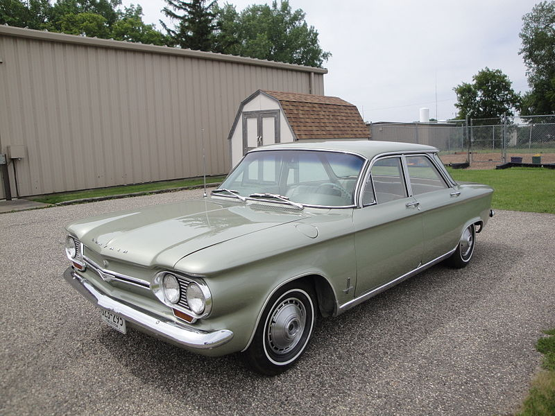
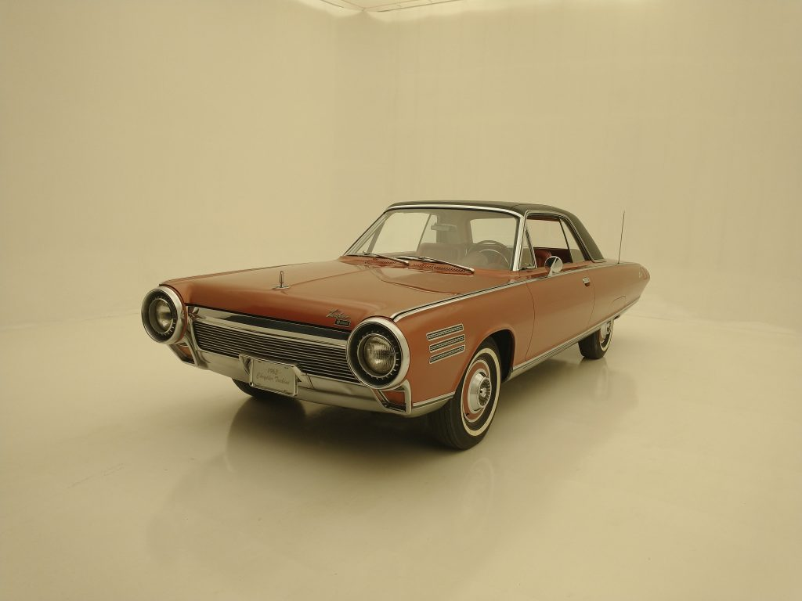

History of the Chrysler Turbine Cars1
After testing the prototypes, Chrysler started a user program in October 1963. A total of 203 drivers in 133 cities would use the cars through January 1966. All together the vehicles surpassed more than one million miles, thus helping Chrysler determine problems and pros with the cars. While turbine engine production proved costly, other issues found included a complicated starting procedure, poor fuel economy, difficult acceleration and excessive noise. However, the user program did reveal several benefits of turbine engines, primarily that they offered excellent dependability with little maintenance.

Available as a two door coupe or convertible or a four door sedan or station wagon (as well as a truck and van lineup), Corvair sales remained healthy despite the bad press. When GM announced the car would be discontinued following a run of 6,000 1969 models, a flurry of orders began to roll in. Buyers didn’t want just any Corvair, however, several tried to lay claim to the very last one off the line. Las Vegas casino tycoon and car collector Bill Harrah placed an order through a Tacoma, WA Chevy dealer. He called for the last car to be an Olympic Gold Monza coupe with the upgraded 110-hp engine, Powerglide, Positraction and enhanced suspension.
